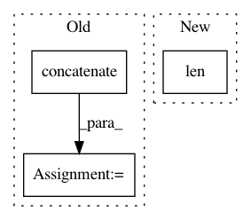

bdf67bc292175a81c63deca27a2056d566db050b,dipy/reconst/dti.py,,restore_fit_tensor,#Any#Any#Any#Any#Any#,1182
Before Change
// Finally, converge on some solution and use it:
this_dti = np.concatenate([np.ravel(x) for x in
decompose_tensor(
from_lower_triangular(this_tensor[:6]).reshape(3,3))])
dti_params[vox] = this_dti
dti_params.shape = data.shape[:-1] + (12,)
restore_params = dti_params
return restore_params
After Change
non_outlier_idx = np.where(residuals <= 3 * sigma)
clean_design = design_matrix[non_outlier_idx]
clean_sig = flat_data[vox][non_outlier_idx]
if len(sigma>1):
this_sigma = sigma[non_outlier_idx]
else:
this_sigma = sigma
In pattern: SUPERPATTERN
Frequency: 4
Non-data size: 3
Instances
Project Name: nipy/dipy
Commit Name: bdf67bc292175a81c63deca27a2056d566db050b
Time: 2013-07-21
Author: arokem@gmail.com
File Name: dipy/reconst/dti.py
Class Name:
Method Name: restore_fit_tensor
Project Name: chainer/chainercv
Commit Name: e5ea96a8a1be0e89f8f20fe3735c24cdfd8fb192
Time: 2018-04-24
Author: yuyuniitani@gmail.com
File Name: chainercv/experimental/links/model/fcis/utils/mask_voting.py
Class Name:
Method Name: mask_voting
Project Name: automl/auto-sklearn
Commit Name: 8481b6966b58cb9b97698abfbf3b01fdc511c3dc
Time: 2015-02-13
Author: kleinaa@cs.uni-freiburg.de
File Name: AutoML2015/ensemble_script.py
Class Name:
Method Name: main
Project Name: pymc-devs/pymc3
Commit Name: 66d21e1fcd43323289840ce83e4193e6b9957d0c
Time: 2017-11-21
Author: junpeng.lao@unifr.ch
File Name: pymc3/sampling.py
Class Name:
Method Name: sample_ppc_w